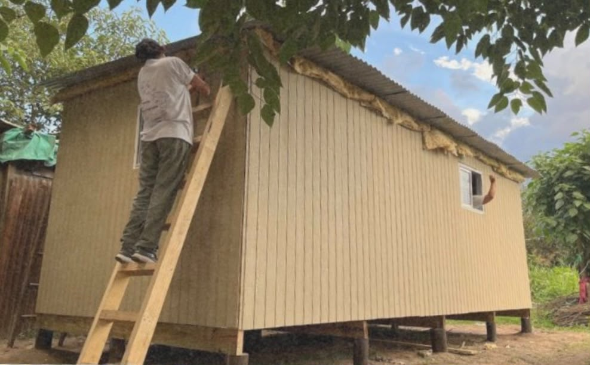
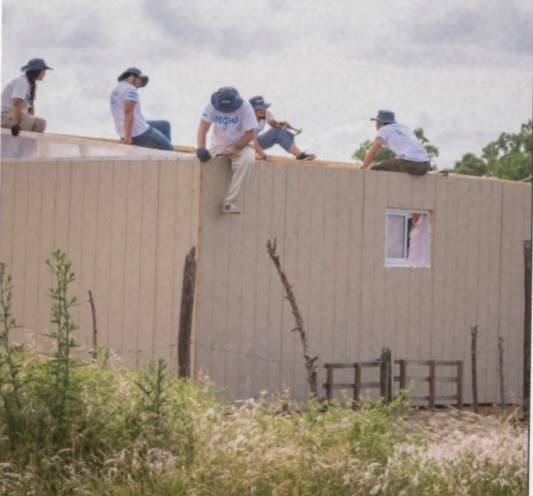
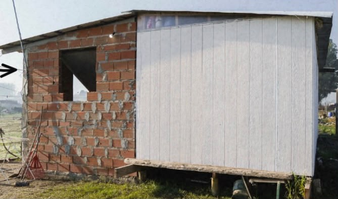
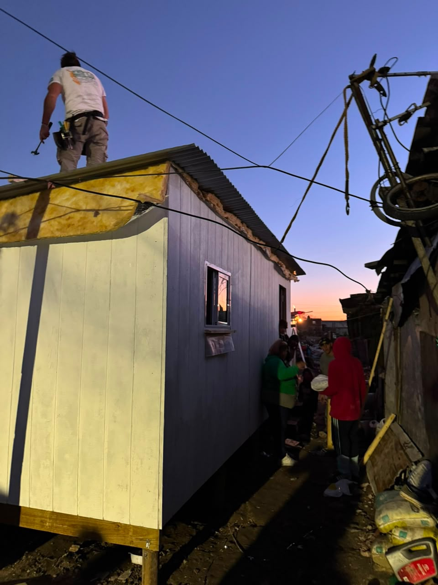
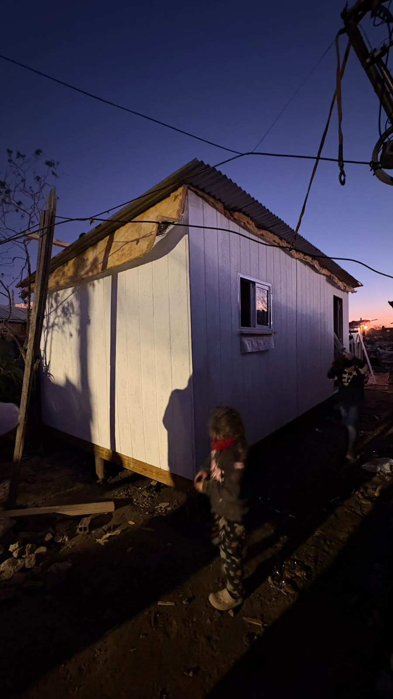
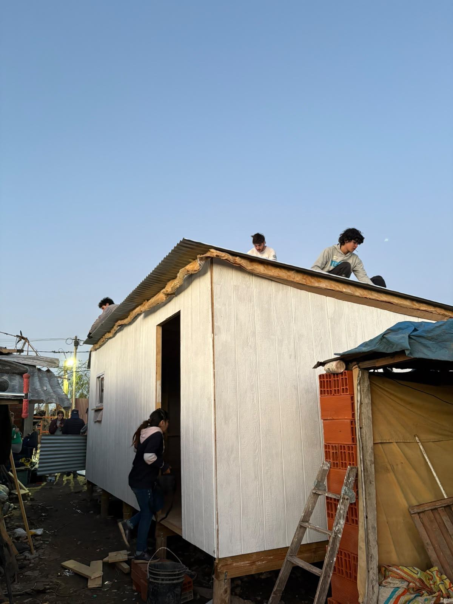

Vivienda Progresiva
Un modelo de vivienda pensado para crecer: arranca en 18 m² y se puede ampliar a 36 m² o más, con preinstalaciones eléctricas y sanitarias para que la familia mejore la casa con sus propios recursos a lo largo del tiempo. A diferencia de la vivienda de emergencia, que resuelve una urgencia habitacional, la vivienda progresiva se construye cuando la familia ya cuenta con un terreno propio o regularizado, y busca ser el punto de partida de una casa definitiva.
Qué le queremos contar al visitante
- La diferencia clave con la vivienda de emergencia: acá el terreno ya es de la familia, y la vivienda se pensó desde el diseño para poder crecer sin romper lo construido.
- Cómo se financia: combina el aporte de la familia, TECHO y en algunos casos programas de subsidio o crédito municipal/provincial.
- El dato de impacto: más del 50% de las familias invierte en ampliar o mejorar la vivienda dentro de los primeros meses de recibirla.
- Que sigue siendo trabajo comunitario: se construye con mano de obra de la familia y voluntarios, igual que la vivienda de emergencia.
Actividades y experiencias del visitante
- Recorrer una vivienda progresiva ya ampliada, para ver "el antes y el después" de la casa original de 18 m².
- Sumarse a una jornada de obra: colocación de preinstalaciones, tabiquería interior o terminaciones, según en qué etapa esté la construcción ese fin de semana.
- Conversar con una familia que ya vivió el proceso de ampliación, para escuchar de primera mano cómo fue crecer la casa con el tiempo.
Datos útiles
- Ubicación
- Barrios populares de la Zona Sur del GBA (Quilmes, Florencio Varela, entre otros) donde TECHO tiene terrenos regularizados.
- Duración de la jornada
- Un día completo de obra (aprox. 8:30 a 17:00), igual que en vivienda de emergencia.
- Acceso
- Se coordina con la sede de TECHO Argentina antes de la jornada; no es una visita libre.
- Requisitos
- No hace falta experiencia previa en construcción; se recomienda ropa cómoda, calzado cerrado y protección solar.
Fotos






Recomendaciones para el visitante
Llevar ropa que se pueda ensuciar, protector solar y agua propia. La obra se desarrolla al aire libre y puede extenderse varias horas bajo el sol.
Es una jornada familiar: se puede participar sin experiencia previa, siguiendo las indicaciones del coordinador de obra de TECHO.